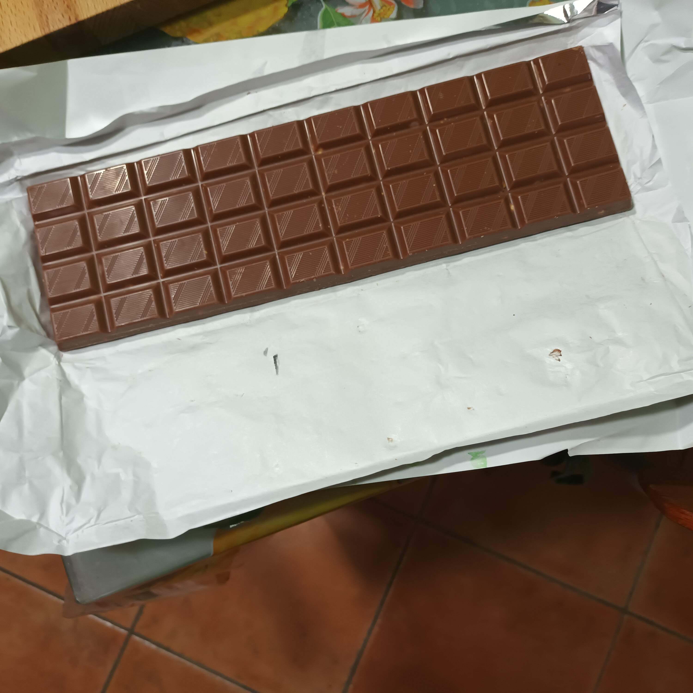
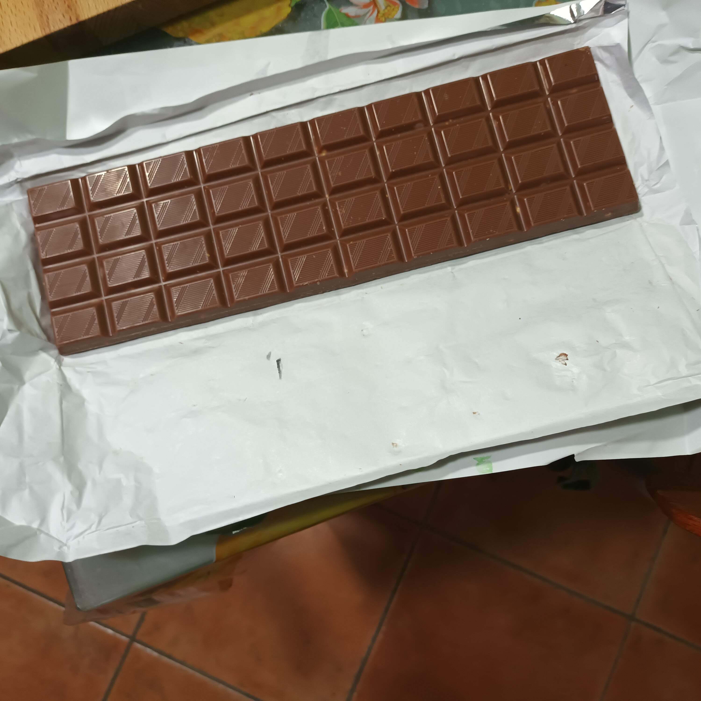

- Una Tavoletta Di Cioccolato
- Un Righello (Sensibilità: 1 mm)
- Un Forno A Microonde
 

Per prima cosa controlliamo, tra le specifiche tecniche del forno, frequenza delle onde che emette: nel nostro caso equivale a 2450MHz (ovvero 2,45 * 10⁸). Dopodiché prendiamo la tavoletta di cioccolato e la riponiamo all'interno del forno. Fare attenzione che la tavoletta rimanga ferma, in modo che le creste non colpiscano l'intera superficie ma solo dei singoli punti periodici. Lasciare il cioccolato nel microonde in funzione per vari secondi.
Dopo aver tirato fuori il cioccolato dal forno ci noteremo che la tavoletta non sarà completamente sciolta, ma lo sarà solo in alcuni punti equidistanti (più o meno) tra loro. Ciò è possibile poiché le onde hanno raggiunto la superficie del cioccolato solo in prossimità dei ventri (ovvero i punti pù bassi) e delle creste (i punti più alti).
A questo punto misuriamo la distanza tra i vari punti caldi della tavoletta cercando di essere più precisi possibile: troveremo che questa si avvicina ai 6 cm, che equivale a metà della lunghezza di un'onda in quanto ogni ventre si trova a metà tra due creste e viceversa . Ora che conosciamo la frequenza f e la lunghezza d'onda λ possiamo ricavare la velocità della luce tramite la formula c = f ∙ λ e svolgendo i calcoli:
c = f ∙ λ =
c = 2.45 ∙ 10^9 ∙ 0.12 =
= 2.94 ∙ 10^8 ≈ 3,00 m/s
Nel 1676 lo scienziato danese Ole Rømer intuì che la velocità della luce poteva essere misurata, e vi riuscì prendendo in considerazione il tempo che impiegava la luce riflessa da Io (uno dei satelliti di Giove) nel compiere un giro intorno al proprio Gigante Gassoso: un'impresa davvero impensabile a quel tempo. Oggi, dopo quasi 350 anni, anche noi siamo riusciti a misurarla grazie ad un comune forno a microonde e del cioccolato!